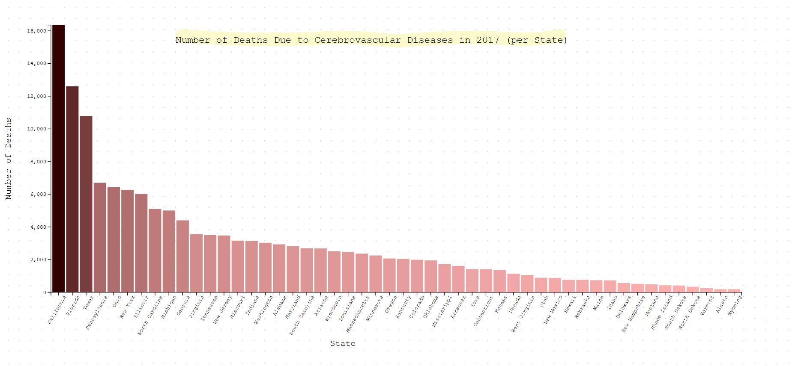

The following visualization has an incomplete title and axis and uses the same colors for different diseases
We can fix the visualization by adding a more descriptive title and axis labels.
The following visualization has too much text We can fix the visualization by removing unnecessary text.
The following visualization has a bad color scheme and no info of what it isWe can fix the visualization by adding better colors and explanatory text.

The following visualization has a bad color scheme We can fix the visualization by adding better colors and changing it to a treemap.